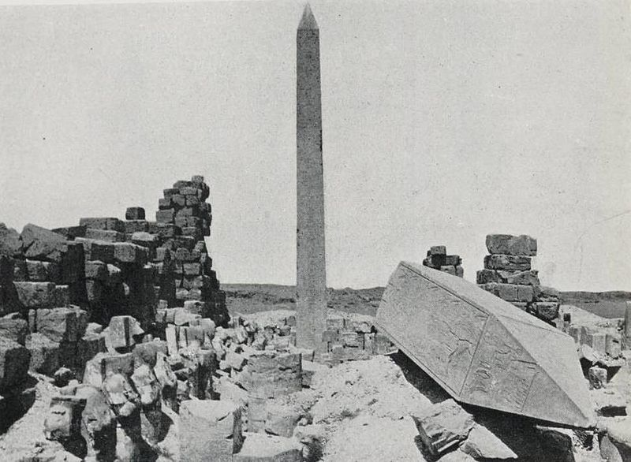
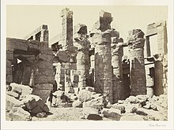
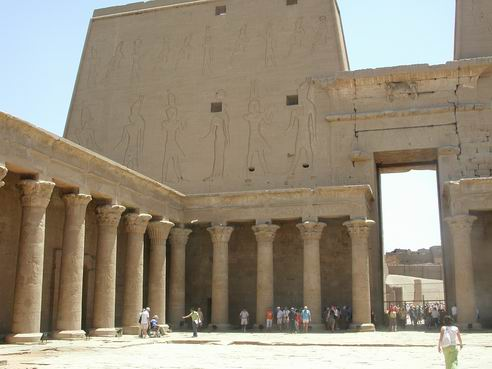
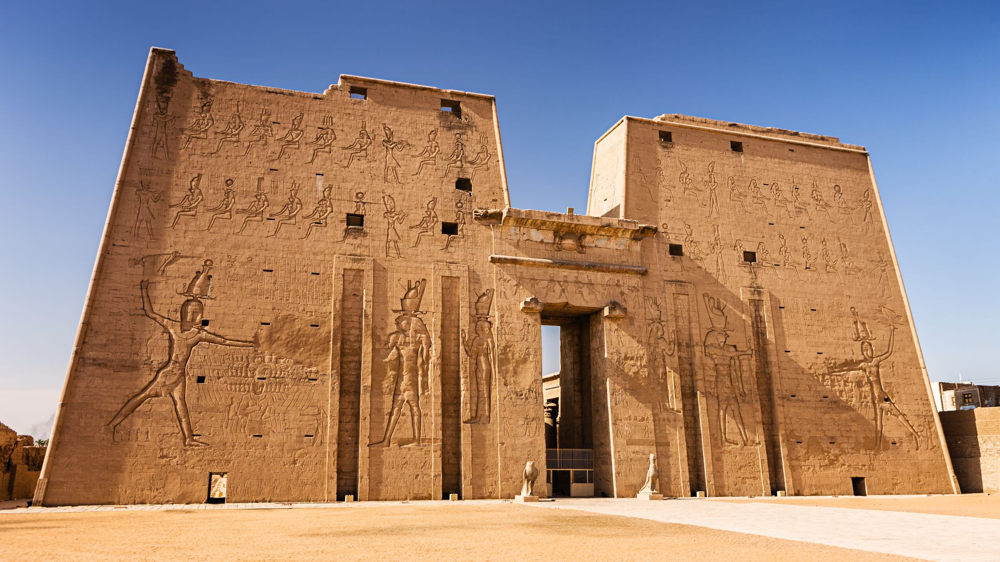
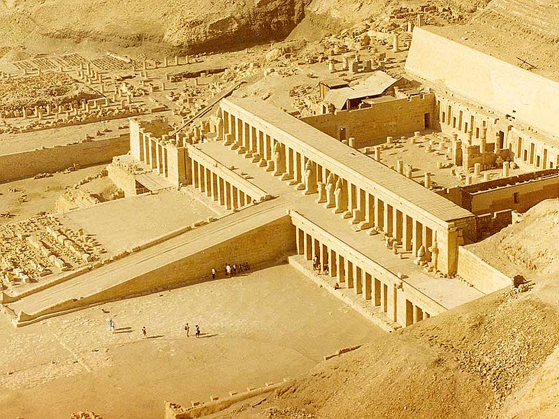
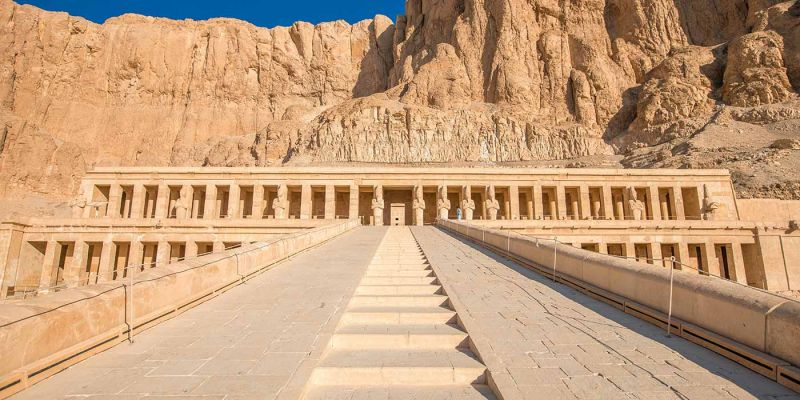

Abu Simbel is a historic site comprising two massive rock-cut temples in the village of Abu Simbel (Arabic: أبو سمبل), Aswan Governorate, Upper Egypt, near the border with Sudan. It is situated on the western bank of Lake Nasser, about 230 km (140 mi) southwest of Aswan (about 300 km (190 mi) by road). The complex is part of the UNESCO World Heritage Site known as the "Nubian Monuments",which run from Abu Simbel downriver to Philae (near Aswan), and include Amada, Wadi es-Sebua, and other Nubian sites. The twin temples were originally carved out of the mountainside in the 13th century BC, during the 19th Dynasty reign of the Pharaoh Ramesses II. They serve as a lasting monument to the king Ramesses II. His wife Nefertari and children can be seen in smaller figures by his feet, considered to be of lesser importance and were not given the same position of scale. This commemorates his victory at the Battle of Kadesh. Their huge external rock relief figures have become iconic.
The complex was relocated in its entirety in 1968 under the supervision of a Polish archaeologist, Kazimierz Michałowski, from the Polish Centre of Mediterranean Archaeology University of Warsaw,on an artificial hill made from a domed structure, high above the Aswan High Dam reservoir. The relocation of the temples was necessary or they would have been submerged during the creation of Lake Nasser, the massive artificial water reservoir formed after the building of the Aswan High Dam on the River Nile. The project was carried out as part of the UNESCO Nubian Salvage Campaign.
 The Karnak Temple Complex, commonly known as Karnak which was originally derived from Arabic: خورنق Khurnaq "fortified village"), comprises a vast mix of decayed temples, pylons, chapels, and other buildings near Luxor, Egypt. Construction at the complex began during the reign of Senusret I in the Middle Kingdom (around 2000–1700 BCE) and continued into the Ptolemaic Kingdom (305–30 BCE), although most of the extant buildings date from the New Kingdom. The area around Karnak was the ancient Egyptian Ipet-isut ("The Most Selected of Places") and the main place of worship of the 18th Dynastic Theban Triad, with the god Amun as its head. It is part of the monumental city of Thebes, and in 1979 it was inscribed on the UNESCO World Heritage List along with the rest of the city.The Karnak complex gives its name to the nearby, and partly surrounded, modern village of El-Karnak, 2.5 kilometres (1.6 miles) north of Luxor.
The history of the Karnak complex is largely the history of Thebes and its changing role in the culture. Religious centers varied by region, and when a new capital of the unified culture was established, the religious centers in that area gained prominence. The city of Thebes does not appear to have been of great significance before the Eleventh Dynasty and previous temple building there would have been relatively small, with shrines being dedicated to the early deities of Thebes, the Earth goddess Mut and Montu. Early building was destroyed by invaders. The earliest known artifact found in the area of the temple is a small, eight-sided column from the Eleventh Dynasty, which mentions Amun-Re. Amun (sometimes called Amen) was long the local tutelary deity of Thebes. He was identified with the ram and the goose. The Egyptian meaning of Amun is "hidden" or the "hidden god"
 Major construction work in the Precinct of Amun-Re took place during the Eighteenth Dynasty, when Thebes became the capital of the unified Ancient Egypt. Almost every pharaoh of that dynasty added something to the temple site. Thutmose I erected an enclosure wall connecting the Fourth and Fifth pylons, which comprise the earliest part of the temple still standing in situ. Hatshepsut had monuments constructed and also restored the original Precinct of Mut, that had been ravaged by the foreign rulers during the Hyksos occupation. She had twin obelisks, at the time the tallest in the world, erected at the entrance to the temple. One still stands, as the second-tallest ancient obelisk still standing on Earth; the other has broken in two and toppled. Another of her projects at the site, Karnak's Red Chapel or Chapelle Rouge, was intended as a barque shrine and originally may have stood between her two obelisks. She later ordered the construction of two more obelisks to celebrate her sixteenth year as pharaoh; one of the obelisks broke during construction, and thus, a third was constructed to replace it. The broken obelisk was left at its quarrying site in Aswan, where it still remains. Known as the unfinished obelisk, it provides evidence of how obelisks were quarried.
Construction of the Great Hypostyle Hall also may have begun during the Eighteenth Dynasty (although most new building was undertaken under Seti I and Ramesses II in the Nineteenth). Merneptah, also of the Nineteenth Dynasty, commemorated his victories over the Sea Peoples on the walls of the Cachette Court, the start of the processional route (also known as the Avenue of Sphinxes) to the Luxor Temple. The last major change to the Precinct of Amun-Re's layout was the addition of the First Pylon and the massive enclosure walls that surround the whole precinct, both constructed by Nectanebo I of the Thirtieth Dynasty.
In 323 AD, Roman emperor Constantine the Great recognised the Christian religion, and in 356 Constantius II ordered the closing of pagan temples throughout the Roman empire, into which Egypt had been annexed in 30 BC. Karnak was by this time mostly abandoned, and Christian churches were founded among the ruins, the most famous example of this is the reuse of the Festival Hall of Thutmose III's central hall, where painted decorations of saints and Coptic inscriptions can still be seen.

This Ptolemaic temple, built between 237 and 57 BC, is one of the best-preserved ancient monuments in Egypt. Preserved by desert sand, which filled the place after the pagan cult was banned, the temple is dedicated to Horus, the avenging son of Isis and Osiris. With its roof intact, it is also one of the most atmospheric of ancient buildings.
 Edfu was a settlement and cemetery site from around 3000 BC onward. It was the 'home' and cult centre of the falcon god Horus of Behdet (the ancient name for Edfu), although the Temple of Horus as it exists today is Ptolemaic. Started by Ptolemy III (246–221 BC) on 23 August 237 BC, on the site of an earlier and smaller New Kingdom structure, the sandstone temple was completed some 180 years later by Ptolemy XII Neos Dionysos, Cleopatra VII’s father. In conception and design it follows the general plan, scale, ornamentation and traditions of Pharaonic architecture, right down to the Egyptian attire worn by Greek pharaohs depicted in the temple’s reliefs. Although it is much newer than cult temples at Luxor or Abydos, its excellent state of preservation helps to fill in many historical gaps; it is, in effect, a 2000-year-old example of an architectural style that was already archaic during Ptolemaic times.
Two hundred years ago the temple was buried by sand, rubble and part of the village of Edfu, which had spread over the roof. Excavation was begun by Auguste Mariette in the mid-19th century. Today the temple is entered via a long row of shops selling tourist tat, and a new visitors centre that houses the ticket office, clean toilets, a cafeteria and a room for showing a 15-minute film on the history of the temple in English.
The inner hypostyle hall also has 12 columns, and in the top left part of the hall is perhaps this temple’s most interesting room: the temple laboratory. Here, all the necessary perfumes and incense recipes were carefully brewed and stored, their ingredients listed on the walls.
Exit the inner hypostyle hall through the large central doorway to enter the offering chamber, or first antechamber, which has an altar where daily offerings of fruit, flowers, wine, milk and other foods were left. On the west side, 242 steps lead up to the rooftop and its fantastic view of the Nile and the surrounding fields. (The roof is closed to visitors.)
The second antechamber gives access to the sanctuary of Horus, which contains the polished-granite shrine that once housed the gold cult statue of Horus. Created during the reign of Nectanebo II (360–343 BC), this shrine, or house of the god, was reused by the Ptolemies in their newer temple. In front of it stands a replica of the wooden barque (boat) in which Horus’ statue would be taken out of the temple in procession during festive occasions: the original is now in the Louvre, Paris.

 The Temple of Hatshepsut (Egyptian: Ḏsr-ḏsrw meaning "Holy of Holies") is a mortuary temple built during the reign of Pharaoh Hatshepsut of the Eighteenth Dynasty of Egypt.[b] Located opposite the city of Luxor, it is considered to be a masterpiece of ancient architecture.[c] Its three massive terraces rise above the desert floor and into the cliffs of Deir el-Bahari. Her tomb, KV20, lies inside the same massif capped by El Qurn, a pyramid for her mortuary complex. At the edge of the desert, 1 km (0.62 mi) east, connected to the complex by a causeway lies the accompanying valley temple. Across the river Nile, the whole structure points towards the monumental Eighth Pylon, Hatshepsut's most recognizable addition to the Temple of Karnak and the site from which the procession of the Beautiful Festival of the Valley departs. The temple's twin functions are identified by its axes: on its main east-west axis, it served to receive the barque of Amun-Re at the climax of the festival, while on its north-south axis it represented the life cycle of the pharaoh from coronation to rebirth
Construction of the terraced temple took place between Hatshepsut's seventh and twentieth regnal year, during which building plans were repeatedly modified. In its design it was heavily influenced by the Temple of Mentuhotep II of the Eleventh Dynasty built six centuries earlier.[d] In the arrangement of its chambers and sanctuaries, though, the temple is wholly unique. The main axis, normally reserved for the mortuary complex, is occupied instead by the sanctuary of the barque of Amun-Re, with the mortuary cult being displaced south to form the auxiliary axis with the solar cult complex to the north. Separated from the main sanctuary are shrines to Hathor and Anubis which lie on the middle terrace. The porticoes that front the terrace here host the most notable reliefs of the temple. Those of the expedition to the Land of Punt and of the divine birth of Hatshepsut, the backbone of her case to rightfully occupy the throne as a member of the royal family and as godly progeny. Below, the lowest terrace leads to the causeway and out to the valley temple.
 The state of the temple has suffered over time. Two decades after Hatshepsut's death, under the direction of Thutmose III, references to her rule were erased, usurped or obliterated. The campaign was intense but brief, quelled after two years when Amenhotep II was enthroned. The reasons behind the proscription remain a mystery. A personal grudge appears unlikely as Thutmose III had waited twenty years to act. Perhaps the concept of a female king was anathema to ancient Egyptian society or a dynastic dispute between the Ahmosid and Thutmosid lineages needed resolving. In the Amarna Period the temple was incurred upon again when Akhenaten ordered the images of Egyptian gods, particularly those of Amun, to be erased. These damages were repaired subsequently under Tutankhamun, Horemheb and Ramesses II. An earthquake in the Third Intermediate Period caused further harm. During the Ptolemaic period the sanctuary of Amun was restructured and a new portico built at its entrance. A Coptic monastery of Saint Phoibammon was built between the 6th and 8th centuries AD and images of Christ were painted over original reliefs. The latest graffito left is dated to c. 1223.
The temple resurfaces in the records of the modern era in 1737 with Richard Pococke, a British traveller, who visited the site. Several visitations followed, though serious excavation was not conducted until the 1850s and 60s under Auguste Mariette. The temple was fully excavated between 1893 and 1906 during an expedition of the Egypt Exploration Fund (EEF) directed by Édouard Naville. Further efforts were carried out by Herbert E. Winlock and the Metropolitan Museum of Art (MMA) from 1911 to 1936, and by Émile Baraize and the Egyptian Antiquities Service (now the Supreme Council of Antiquities (SCA)) from 1925 to 1952. Since 1961, the Polish Centre of Mediterranean Archaeology (PCMA) has carried out extensive consolidation and restoration works throughout the temple.